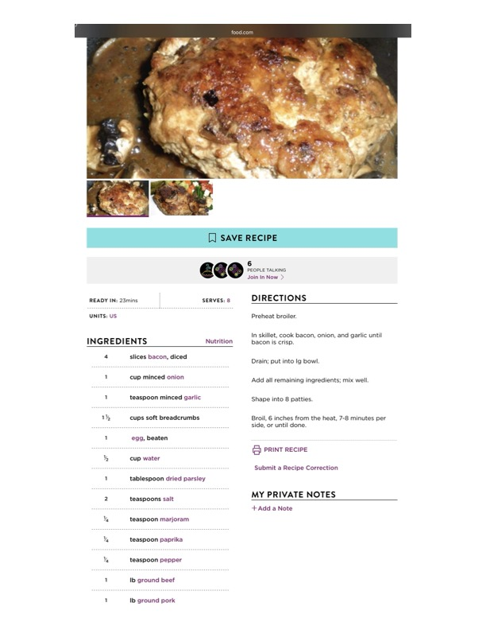

Beef and Pork Patties (Broiled or Pan-Fried)

Original cookbook page 191
Broiled beef and pork patties featuring bacon, onion, and garlic mixed into the meat for extra flavor. Can also be pan-fried for convenience.
Prep: 15 minutes • Cook: 14-16 minutes (broiled) or 8-10 minutes (pan-fried) • Total: 30 minutes
Ingredients
- 4 slices bacon, diced
- 1 cup minced onion
- 1 teaspoon minced garlic
- 1½ cups soft breadcrumbs
- 1 egg, beaten
- ½ cup water
- 1 tablespoon dried parsley
- 2 teaspoons salt
- ¼ teaspoon marjoram
- ¼ teaspoon paprika
- ¼ teaspoon pepper
- 1 lb ground beef
- 1 lb ground pork
Instructions
- In skillet, cook bacon, onion, and garlic until bacon is crisp.
- Drain; put into large bowl.
- Add all remaining ingredients; mix well.
- Shape into 8 patties.
- FOR BROILING: Preheat broiler. Broil, 6 inches from the heat, 7–8 minutes per side, or until done.
- FOR PAN-FRYING: Cook in frying pan on medium-high heat for 4-5 minutes first side, then probably only 4 minutes on second side until cooked through.
📝 Recipe Notes
COOKING NOTE: There are 2 recipes almost the same in the cookbook. Personal testing shows pan-frying works well at 4-5 minutes first side, 4 minutes second side on medium-high heat. Recipe from Food.com. Features bacon mixed into the meat for added flavor. Combined recipe from pages 191-192.
Recipe #191 from collection